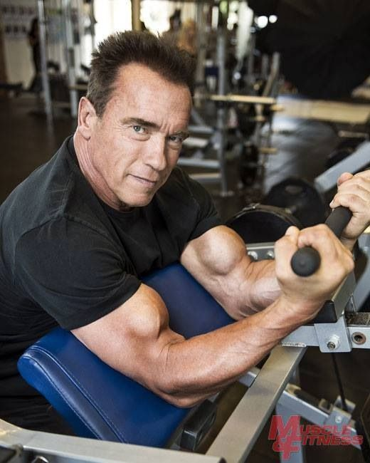

De nos jours Arnold commence à faire vieux, il a 75 ans et toujours en pleine forme, cela nous montre qu'il était en maitrise de son corps et qu'il n'abusait pas sur la charge à l'opposé de Ronnie Coleman, ancien bodybuilder qui de nos jours n'est meme plus capable de se tenir droit.
Il est un véritable touche-à-tout, il s'est meme essayé à la presentation d'une télé-réalité. Mais coté cinéma il a refusé de jouer dans la suite de "Predator".